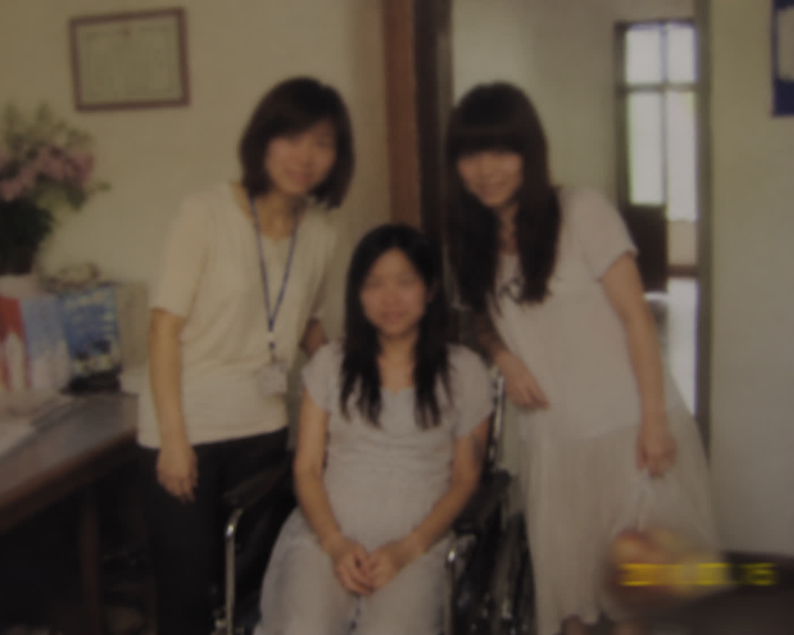

第一次发博文，摸索了好一会，感觉像是在一个很大的房间里，突然拥有了一张属于自己的桌子。以后如果有什么想说的话，应该都会写在这里吧。希望未来的自己回来看的时候，还能记得现在的样子。
我想转载一下之前在日记本写下的文字：“今天那个女孩把看完了的《小王子》给了我。于是我又开始细细地看。其实以前一直觉得这是一本写给小孩子看的书。可是重新读一遍，突然发现里面很多话，好像只有长大以后才能看懂。”
小王子离开自己的星球，遇见很多奇怪的大人。有人只在乎数字，有人在乎权力，有人在乎别人怎么看自己。可最后他发现，真正重要的是自己认真爱过的人。
"你为你的玫瑰花费的时间，使你的玫瑰花变得重要。"
大概人与人之间也是这样吧。因为某个人出现，所以一本普通的书、一首普通的歌、一条普通的路，都变得特别。
明天就是新生报到的日子了。想起去年这个时候的自己，也是一个人拖着行李站在校门口。那时候觉得槐花好大。不认识任何人，也不知道未来四年会发生什么。后来才发现，大学其实没有想象中那么可怕。
你会认识新的朋友。会在图书馆待到闭馆。会因为一门课焦虑，也会因为一件小事开心很久。ps：想去自习的可以去五楼文学区，一般人我可不告诉ta
给新来的同学几个小建议：第一，一定要去图书馆看看。那里藏着很多你还没有遇见的世界。第二，不要害怕孤独。有时候一个人在校园里走一圈，也是一件很幸福的事情。第三，如果遇到了困难，不要一个人扛。总会有人愿意听你说。
欢迎来到槐花。希望这里会成为你记忆里很特别的地方。
最近读完了西蒙娜·德·波伏娃的《第二性》。读的时候其实有很多地方看不懂。但是有一句话让我印象很深：
"女人不是天生的，而是成为的。"
我想，也许每个人都应该有选择自己人生的权利。不应该因为别人一句"你应该怎样"，就放弃成为自己的可能。女孩子可以喜欢文学，也可以喜欢科学。可以温柔，也可以坚定。可以选择事业，也可以选择另一条路。
人这一生最重要的事情，大概就是找到真正的自己。
推荐给所有正在迷茫的人。
今天去图书馆，又借到了《小王子》。很巧，是一本旧版本。扉页上还有不知道是谁留下来的字："希望你永远记得，有人认真爱过你。"
突然想起第一次认识这本书的时候。那时候图书馆只剩最后一本。有个女生站在书架前，看着那本书发呆。她说："怎么每次喜欢的东西都差一点。"
后来我们因为一本书认识。她叫梅青云。她喜欢很多我以前不了解的东西。她推荐给我一首歌，叫《江南》。她说："有些歌第一次听没感觉，但是以后某一天你会突然想起。"
她说得对。有些人也是这样。
今天毕业。四年真的很快。曾经觉得毕业离自己很远。可现在站在校门口，突然不知道该说什么。
大家分道扬镳前往不同的未来。
我想去做一些真正有意义的事情，起码是我认为有意义的事情。如果有人遇到困难，希望有人可以站出来帮帮她。所以我选择去了河洲路街道办。可能工资不高。可能很辛苦。但是我觉得值得。
这个世界，总需要有人听见那些被忽略的声音。
我们长大以后，好像越来越擅长计算。计算成绩。计算未来。计算得失。可很少有人告诉我们：不要忘记喜欢一朵花、一首歌、一本书的感觉。
今天和青云聊天。她说："其实人和人之间的遇见挺神奇的。"我觉得也是。世界这么大。能遇见一个愿意听你讲话的人，很幸运。
今天见到了禾禾。第一次见面的时候，她一直低着头。她很瘦。手腕上有明显的伤痕。她坐在那里，不停地说："是不是我哪里做得不好？""是不是我再忍一忍就好了？"
我听着这些话，很难受。因为我知道，她不是第一个这样问自己的女孩。她才21岁。可她已经习惯了向别人道歉。
她告诉我，她结婚不是因为喜欢。是家里觉得那个男人条件不错。她说她以为结婚以后会慢慢变好的。可后来他开始控制她。不允许她联系朋友。不允许她出去工作。一次又一次地伤害她。
她说："我想离开。"说完这句话，她哭了很久。我告诉她："你没有做错任何事情。""你有离开的权利。"今天帮她联系了法律援助。也联系了临时庇护机构。希望她可以重新开始。
我一直觉得。人活着，总要为别人留下些什么。哪怕只是一句："别怕，我在这里。"
今天和青云还有严信去看禾禾。
这是青云第一次见到禾禾，她们看起来聊的很投缘。我和青云很少拍照，这张严信拍的照片更显珍贵。
而且禾禾第一次主动跟我说："宋姐，我以后想开一家小店。"
我问她："开什么店？"
她想了一会儿，说："卖小蛋糕吧。"
她说她小时候喜欢吃甜的东西。可后来很久没有吃过了。
青云在一旁一直鼓励她。
我突然觉得很开心。
因为一个人开始想未来的时候。
就说明她正在慢慢回来。

最近天气越来越冷。过几天就是禾禾开庭的日子，也大概是她能够解脱的日子。
但是今天看到禾禾的时候，她正在笑。
她说："宋姐，等以后孩子出生，我想带她去看看槐花。"
我问："为什么？"
她说："因为我想让她知道，这个世界其实很好。"
我没有回答。有时候觉得，人真的很奇怪。
明明经历过那么多黑暗。可还是会期待春天。
希望所有女孩。都不用再害怕回家的路。